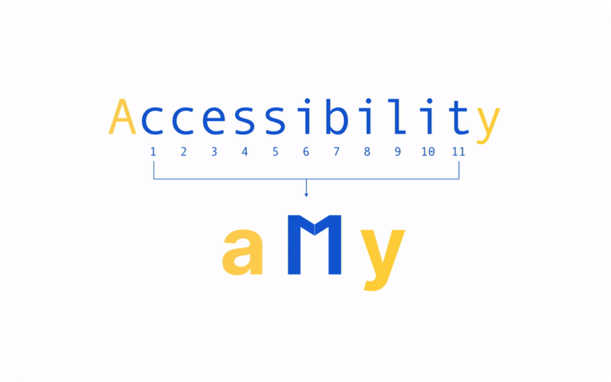
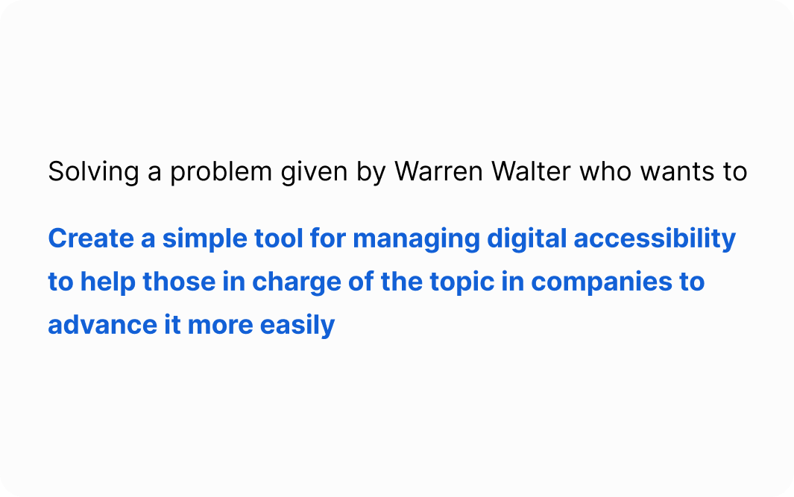
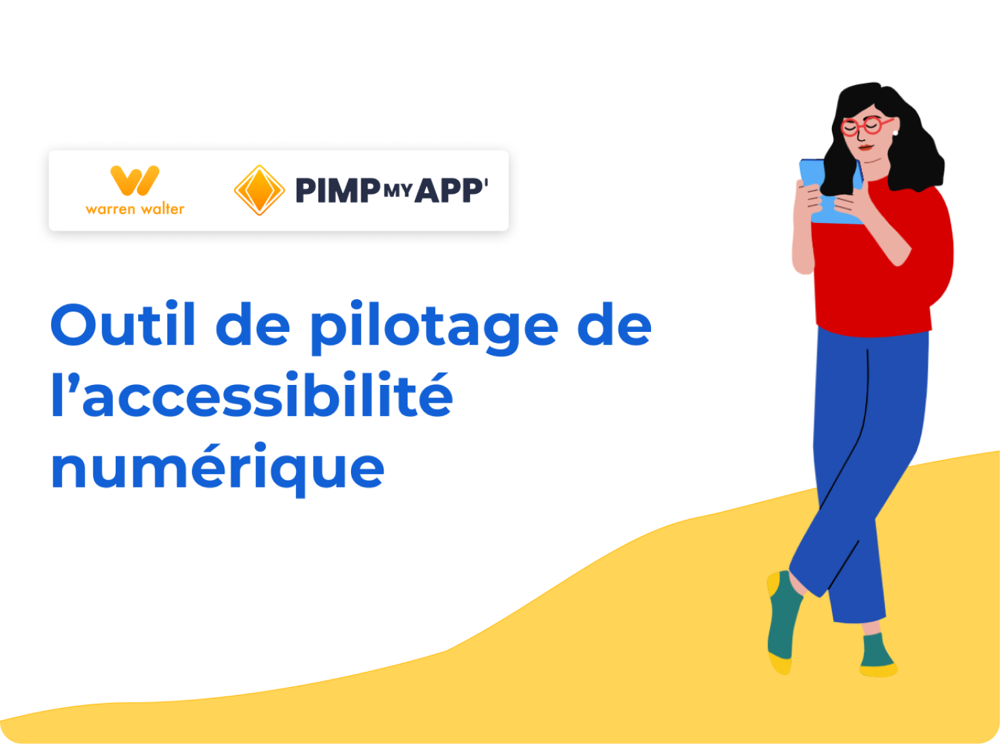

Navigate to inclusivity: Revolutionize digital accessibility management with our simplified solution.

I was selected to work in a team on an exciting and challenging problem entrusted by Warren Walter, ESN involved in digital accessibility. It engaged a group of professionals to work on real business issues using the Design Sprint methodology.
It's the process of going from a problem to a prototype tested by users in just 5 days! We worked in very dynamic and timed workshops.

